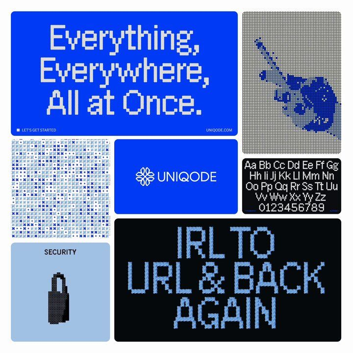
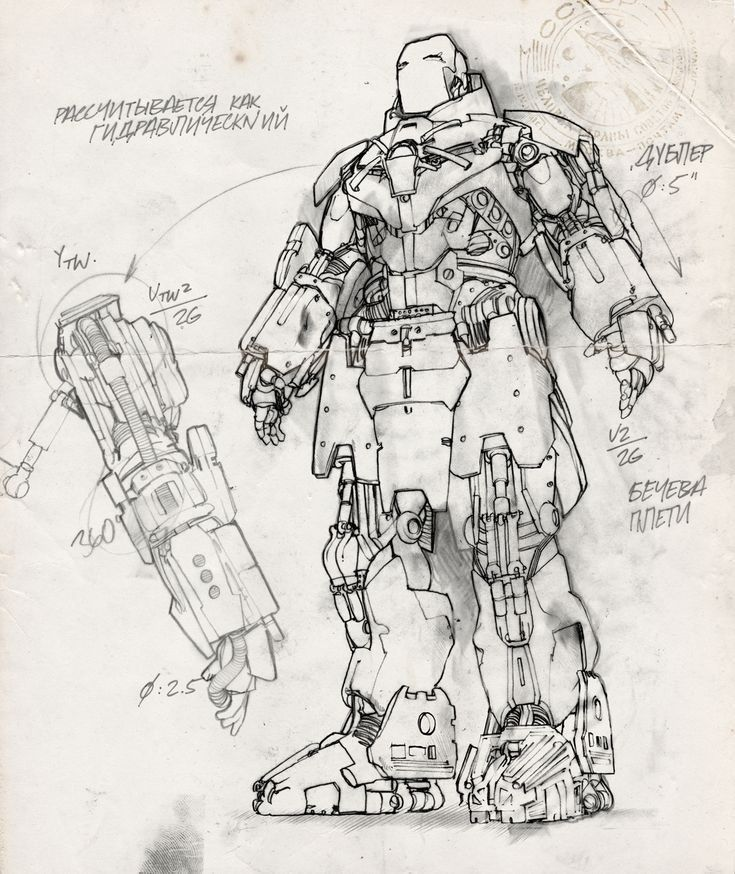

CMO at Orbit • Independent AI Systems Builder • Athletic Frame • India
“One primary growth focus. A few supporting habits. Everything else deliberately deprioritized.”
Building enduring independence through technical competence, AI software leverage, rigorous thinking, and uncompromising physical capability.
Scale Orbit from $0 to $10,000 MRR via high-signal merchant acquisition loops.
Direct customer validation and revenue generation establish financial runway and prove market demand before scaling.
All peak creative morning blocks reserved strictly for Orbit GTM, merchant outbound, and checkout order recovery loops.
Athletic body recomposition: 4x/week lifting with progressive overload + daily running & mobility. Non-negotiable energy anchor.
Applied knowledge only: study vector indexing, systems internals, and sales psychology directly through project execution.
Preserved without competing for active attention. Can be promoted to Flagship at any time.
DIRECTIVE: Prioritize functional power-to-weight ratio, shoulder width, chest density, and cardiovascular stamina. Avoid excessive bulk or bloated aesthetics. No punitive streaks or shame language.
BUILDER IN PROGRESS: Documenting the raw engineering, AI memory systems, and B2B growth experiments in public. No fake guru postures or inflated founder claims. Credibility comes from verifiable demos, architecture breakdowns, and transparent metrics.
Milestones toward personal runway and hardware upgrade fund. (Targets, not guaranteed income).
| EXPERIMENT | STATUS | TARGET INCOME | CURRENT METRIC | STRATEGIC NOTES |
|---|
Honest reflection over productivity theater. Answer the 10 core questions to assess real forward velocity, eliminate friction, and designate the single outcome for the coming week.
Strict conceptual separation used throughout MAXXING to ensure efforts produce measurable business results.
Validate customer demand & achieve commercial PMF for Orbit.
Record & send personalized Loom video audits to qualified Shopify founders.
50 delivered teardowns, 20 pilot store integrations on store checkout.
Convert 10+ paid recurring merchants generating $10,000 MRR.
Not just aesthetic references, but mental models: what I admire, study, and actively extract into how I build, think, and design.

